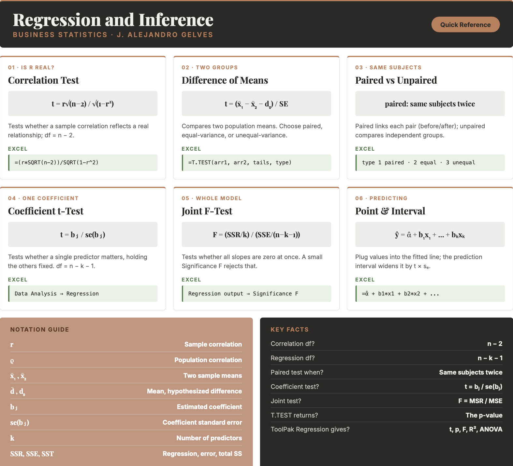

14 Regression and Inference
This final chapter brings hypothesis testing and regression together. You will learn to judge whether a correlation is real or just noise, whether two groups truly differ, and whether a regression coefficient carries any explanatory weight. These are the tools that turn a descriptive relationship into a defensible conclusion — letting you evaluate market trends, compare performance across groups, and decide which predictors actually matter in a model. It is a fitting close to the book: it unites the descriptive tool of regression with the inferential habit of asking whether a pattern is real, turning a fitted line into a tested claim about the world.
14.1 Correlation Significance
A sample correlation coefficient is almost never exactly zero, even when the two variables are unrelated. To decide whether an observed correlation reflects a real relationship in the population, we test the population correlation \(\rho\):
- \(H_0: \rho \geq 0\) vs. \(H_a: \rho < 0\) — left-tailed
- \(H_0: \rho \leq 0\) vs. \(H_a: \rho > 0\) — right-tailed
- \(H_0: \rho = 0\) vs. \(H_a: \rho \ne 0\) — two-tailed
CORRELATION TEST STATISTIC \[t = \frac{r_{xy}\sqrt{n-2}}{\sqrt{1-r_{xy}^2}}\] with degrees of freedom \(df = n - 2\), where \(r_{xy}\) is the sample correlation coefficient and \(n\) is the sample size.
Example: A sample of \(n = 30\) shows a correlation of \(r = 0.5\) between advertising and sales. Testing \(H_0: \rho = 0\) against \(H_a: \rho \ne 0\): \[t = \frac{0.5\sqrt{30-2}}{\sqrt{1-0.5^2}} = \frac{0.5 \times 5.29}{0.866} = 3.06\] With \(df = 28\), the two-tailed p-value is about \(0.005\). Because \(0.005 < 0.05\), we reject the null and conclude the correlation is statistically significant.
14.2 Difference of Means Tests
We often want to know whether two populations have different means — for example, whether two divisions post different sales, or whether a treatment changes an outcome. The test statistic depends on how the two samples relate.
DIFFERENCE OF MEANS TEST STATISTICS \[\text{Unpaired, unequal variances:} \quad t = \frac{(\bar{x}_1 - \bar{x}_2) - d_0}{\sqrt{\frac{s_1^2}{n_1} + \frac{s_2^2}{n_2}}}\] \[\text{Unpaired, equal variances:} \quad t = \frac{(\bar{x}_1 - \bar{x}_2) - d_0}{\sqrt{s_p^2\left(\frac{1}{n_1} + \frac{1}{n_2}\right)}}\] \[\text{Paired:} \quad t = \frac{\bar{d} - d_0}{s / \sqrt{n}}\] where \(d_0\) is the hypothesized difference, \(s_p^2\) is the pooled variance, and \(\bar{d}\) and \(s\) are the mean and standard deviation of the paired differences.
The degrees of freedom differ across the three tests:
| Test | Degrees of freedom |
|---|---|
| Unpaired, unequal variances | \(df = \dfrac{\left(\frac{s_1^2}{n_1} + \frac{s_2^2}{n_2}\right)^2}{\frac{(s_1^2/n_1)^2}{n_1-1} + \frac{(s_2^2/n_2)^2}{n_2-1}}\) (rounded down) |
| Unpaired, equal variances | \(df = n_1 + n_2 - 2\) |
| Paired | \(df = n - 1\), where \(n\) is the number of pairs, not the number of observations |
A paired test is used when the two samples are naturally linked — the same subjects measured twice (before and after), for instance. An unpaired (independent) test is used when the two samples come from separate groups.
Example (unpaired). A company evaluates a training program. Six employees who took the program score a mean of \(\bar{x}_1 = 33.17\) on a productivity assessment (with \(s_1 = 7.55\)), while six different employees who did not take it score a mean of \(\bar{x}_2 = 30.00\) (with \(s_2 = 7.18\)). Testing \(H_0: \mu_1 - \mu_2 = 0\) against \(H_a: \mu_1 - \mu_2 \ne 0\) with unequal variances: \[t = \frac{(33.17 - 30.00) - 0}{\sqrt{\frac{7.55^2}{6} + \frac{7.18^2}{6}}} = \frac{3.17}{4.25} = 0.74\] The Welch formula gives about \(10\) degrees of freedom, and the two-tailed p-value is roughly \(0.47\). Because \(0.47 > 0.05\), we fail to reject the null: the \(3.17\)-point gap is swamped by the large variation between employees, so we cannot conclude the program helped.
Example (paired). Now suppose those same six employees were each measured before and after the program, so every “after” score is matched to that person’s own “before” score:
| Employee | Before | After | Difference |
|---|---|---|---|
| 1 | 20 | 23 | 3 |
| 2 | 32 | 36 | 4 |
| 3 | 25 | 27 | 2 |
| 4 | 40 | 43 | 3 |
| 5 | 28 | 31 | 3 |
| 6 | 35 | 39 | 4 |
The group means are identical to the unpaired case (\(30.00\) before, \(33.17\) after), but now we work with each person’s change. The individual gains are remarkably consistent: \(\bar{d} = 3.17\) with \(s = 0.75\). Testing \(H_0: \mu_d = 0\) against \(H_a: \mu_d \ne 0\): \[t = \frac{\bar{d} - 0}{s / \sqrt{n}} = \frac{3.17}{0.75 / \sqrt{6}} = 10.30\] With \(df = n - 1 = 6 - 1 = 5\) (six pairs, not twelve observations) the two-tailed p-value is about \(0.0001\). Because \(0.0001 < 0.05\), we strongly reject the null: the program clearly raised productivity.
The two examples use the same numbers yet reach opposite conclusions, and the reason is the design. The unpaired test must carry the large variation between employees — scores range from \(20\) to \(40\) — and that noise hides the modest improvement. The paired test cancels that person-to-person variation by looking only at each individual’s change, leaving a small, consistent difference that stands out sharply (\(s\) drops from about \(7.5\) to \(0.75\)). Whenever the data are naturally matched, pairing is the more powerful choice.
14.3 Regression Inference
After fitting a regression, two kinds of tests tell us whether the model has explanatory power.
Testing a single coefficient. Each coefficient is tested against zero — is this predictor related to \(y\), holding the others fixed?
TEST FOR A SINGLE COEFFICIENT \[H_0: \beta_j = 0 \quad\text{vs.}\quad H_a: \beta_j \ne 0, \qquad t = \frac{b_j}{se(b_j)}\] where \(b_j\) is the estimated coefficient and \(se(b_j)\) is its standard error, with \(df = n - k - 1\).
Testing joint significance. The \(F\)-test asks whether all the slope coefficients are zero at once — is the model, as a whole, better than no predictors?
JOINT SIGNIFICANCE (F-TEST) \[H_0: \beta_1 = \beta_2 = \dots = \beta_k = 0, \qquad F = \frac{SSR/k}{SSE/(n-k-1)} = \frac{MSR}{MSE}\] where \(k\) is the number of predictors and \(n\) is the sample size.
The ANOVA table organizes these pieces:
| Source | df | SS | MS | F |
|---|---|---|---|---|
| Regression | \(k\) | \(SSR\) | \(MSR = \frac{SSR}{k}\) | \(F = \frac{MSR}{MSE}\) |
| Residual | \(n-k-1\) | \(SSE\) | \(MSE = \frac{SSE}{n-k-1}\) | |
| Total | \(n-1\) | \(SST\) |
14.4 Regression and Inference in Excel
Correlation significance. Compute the correlation with =CORREL(x_range, y_range), then turn it into a test statistic and p-value:
=(r*SQRT(n-2)) / SQRT(1 - r^2)followed by =T.DIST.2T(ABS(t), n-2) for a two-tailed test (or =T.DIST / =T.DIST.RT for one tail).
Difference of means. The =T.TEST(array1, array2, tails, type) function returns the p-value directly. The tails argument is 1 (one-tailed) or 2 (two-tailed); the type argument is 1 (paired), 2 (two-sample, equal variances), or 3 (two-sample, unequal variances). For full output — the test statistic, critical values, and both one- and two-tailed p-values — use the Data Analysis ToolPak, which offers t-Test: Paired Two Sample for Means, t-Test: Two-Sample Assuming Equal Variances, and t-Test: Two-Sample Assuming Unequal Variances.
Regression inference. Run Data → Data Analysis → Regression. The output reports each coefficient with its standard error, \(t\)-statistic, and p-value (the individual coefficient tests), the \(F\)-statistic with its Significance F (the joint test), and the ANOVA table — everything in this chapter in a single step.
14.5 Excel Function Summary
Below is a list of the Excel functions and tools used in this section:
=CORREL(x_range, y_range)returns the correlation coefficient, the starting point for a correlation test.=T.TEST(array1, array2, tails, type)returns the p-value of a difference-of-means test.typeis1(paired),2(equal variances), or3(unequal variances).=T.DIST.2T(x, deg_freedom),=T.DIST(x, df, TRUE), and=T.DIST.RT(x, df)convert a test statistic to a p-value.Data Analysis ToolPak → t-Test performs the three difference-of-means tests with full output.
Data Analysis ToolPak → Regression returns coefficients, standard errors, \(t\)-statistics, p-values, the \(F\)-statistic, \(R^2\), and the ANOVA table.
14.6 Chapter Summary Cheat Sheet
14.7 Exercises
The following exercises will help you test your knowledge of regression and inference. In particular, the exercises work on:
- Determining the significance of a correlation.
- Conducting paired and unpaired tests of means.
- Determining the significance of regression coefficients, individually and jointly.
- Making predictions from a regression model.
Try not to peek at the answers until you have formulated your own answer and double checked your work for any mistakes.
Exercise 1
Consider the competing hypotheses \(H_{0}: \rho = 0\), \(H_{a}: \rho \neq 0\). A sample of \(25\) observations reveals a correlation coefficient of \(0.15\) between two variables. At a \(5\%\) significance level, can we reject the null hypothesis?
Answer
We cannot reject the null: the p-value of \(0.47\) is greater than \(0.05\).
In Excel:
=(0.15*SQRT(25-2)) / SQRT(1 - 0.15^2)→ \(0.73\) (test statistic)=T.DIST.2T(0.73, 23)→ \(0.47\) (two-tailed p-value)
Use the Hitters data set to examine the relationship between Hits and Salary. Calculate the correlation coefficient and test \(H_{0}: \rho = 0\) against \(H_{a}: \rho \neq 0\) at the \(1\%\) significance level.
Answer
The correlation is \(0.44\) and the test statistic is \(7.89\). The p-value is approximately \(0\), so we reject the null hypothesis — the correlation between Hits and Salary is highly significant.
In Excel (there are \(263\) players with a recorded salary):
=CORREL(Hits_range, Salary_range)→ \(0.44\)=(0.44*SQRT(263-2)) / SQRT(1 - 0.44^2)→ \(7.89\) (test statistic)=T.DIST.2T(7.89, 261)→ approximately \(0\)
Exercise 2
Use the Hitters data set to investigate whether the average number of Hits differs between the two leagues (American and National), using the NewLeague and Hits variables. Test at the \(5\%\) significance level. Is there reason to believe the population variances differ?
Answer
There is no strong reason to believe the variances differ — players are recruited from a common pool. At the \(5\%\) level the difference in mean Hits is not significant, so we cannot reject the null.
Copy the Hits for
NewLeague = "A"into one column and the Hits forNewLeague = "N"into another (or filter the data). This is an unpaired, two-tailed test assuming equal variances:=T.TEST(A_range, N_range, 2, 2)→ \(0.28\) (p-value)
Since \(0.28 > 0.05\), we fail to reject the null.
Use the BrainCancer data set to test whether males have a higher average survival time than females, using the sex and time variables. Test at the \(5\%\) significance level. Is there reason to believe the population variances differ?
Answer
There may be reason to believe the variances differ, so we use an unequal-variance test. At the \(5\%\) level we cannot reject \(H_{0}: \mu_{male} - \mu_{female} \leq 0\) — there is no evidence that males survive longer.
Run
Data → Data Analysis → t-Test: Two-Sample Assuming Unequal Varianceson the male and female survival times. The male mean (\(26.78\)) is actually below the female mean (\(28.10\)), giving a test statistic of \(-0.31\). Because the difference points opposite to the alternative, the one-tailed p-value is about \(0.62\) — far above \(0.05\) — so we fail to reject the null.
Exercise 3
Use the sleep data set. At the \(1\%\) significance level, is there an effect of the drug on the \(10\) patients? Treat group \(1\) as the measurement before the drug and group \(2\) as after, so the two groups are the same patients measured twice.
Answer
The drug has an effect: we reject \(H_{0}: \bar{d} = 0\). The mean difference in extra sleep is statistically different from zero.
Because the same patients are measured twice, use a paired, two-tailed test. With the Group 1 values in A2:A11 and the Group 2 values in A12:A21:
=T.TEST(A2:A11, A12:A21, 2, 1)→ \(0.0028\) (p-value)
Since \(0.0028 < 0.01\), we reject the null at the \(1\%\) level.
Exercise 4
Use the Hitters data set to investigate the effect of HmRun, RBI, and Years on a player’s Salary. Which variables are statistically different from zero? Are the variables jointly significant? Does the \(R^2\) suggest a good fit?
Answer
RBI and Years are statistically significant (p-values near \(0\)): salary rises with experience and with RBIs. Home runs are not significant (p-value about \(0.14\)). The \(F\)-statistic is highly significant, so the predictors are jointly significant. However, the \(R^2\) and adjusted \(R^2\) are only about \(0.32\), so the model explains just \(32\%\) of the variation in salary — more variables would be needed for a better fit.
Copy
HmRun,RBI, andYearsinto three adjacent columns (the ToolPak needs a contiguous X range), then runData → Data Analysis → RegressionwithSalaryas the Input Y Range and those three columns as the Input X Range. The output gives:- each coefficient’s p-value (the individual tests): RBI and Years significant, HmRun not
- the Significance F (the joint test): approximately \(0\)
- R Square and Adjusted R Square: about \(0.33\) and \(0.32\)
José Altuve had \(28\) home runs, \(57\) RBIs, and \(12\) years in the league. What salary does the model predict for him, and what is the \(95\%\) prediction interval? (The model predicts a 1987 salary.)
Answer
The predicted salary is \(619.93\) (thousand dollars), with a \(95\%\) prediction interval of \([-129.89,\ 1369.7]\).
Using the coefficients from the regression output (\(\hat{\alpha}=-90.09\), \(b_{HmRun}=-7.35\), \(b_{RBI}=9.16\), \(b_{Years}=32.82\)), the point prediction is:
=-90.09 + (-7.35)*28 + 9.16*57 + 32.82*12→ \(619.93\)
The prediction interval widens the estimate by \(t \times s_e\), where \(t =\)
T.INV.2T(0.05, 259)\(\approx 1.97\) and \(s_e\) is the regression’s standard error (\(\approx 381\) for a new observation). This gives \(619.93 \pm 749.8 = [-129.89,\ 1369.7]\). The interval is very wide — and even includes negative salaries — because the model explains only about a third of the variation in salary.